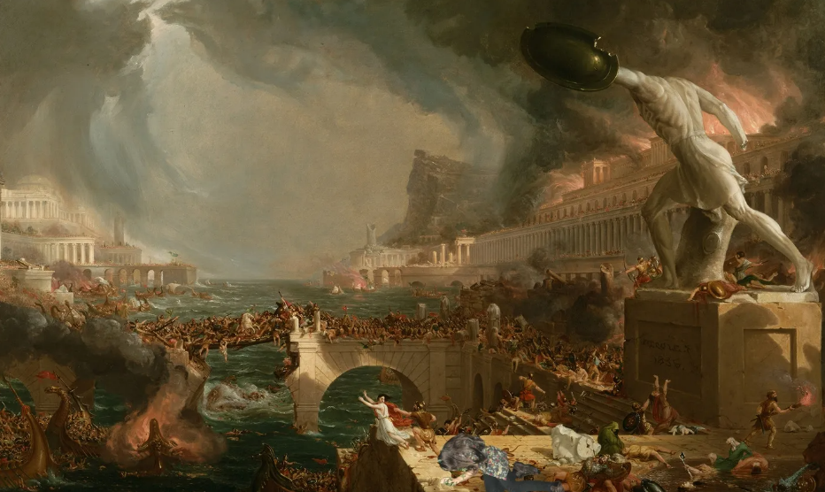

ROME HAS FALLEN!
HOW'S GOING TO PICK IT BACK UP AGAIN?



In what historians are already calling “a bit of a downer,” the civilization of Rome has fallen. After centuries of aqueducts, sandals, and occasionally stabbing one another in the Senate, the Eternal City has proven itself to be somewhat less eternal than advertised.Eyewitnesses report that the collapse was marked by widespread looting, confusion, and at least one man shouting, “Haec est causa cur res bonas habere non possumus!” Bread and circuses, once staples of civic life, have been discontinued due to a shortage of both bread and lions. When asked for comment, one local merchant shrugged and said, “Bonum cursum habuimus.”
Adding to the intrigue, Danny Cooper was allegedly spotted on the fringes of the chaos handing out flyers once again. As usual, no one can agree on what they contained. Some insist they contained evacuation routes, others swear they were recruitment pamphlets for his personal lip balm appreciation society. Also, predictably, one source insists they were risqué portraits of Danny dressed in a toga.
What is clear is that Rome’s collapse has left a cultural void (and possibly a surplus of marble busts) that future generations will puzzle over for centuries. In the meantime, scholars have agreed on at least one universal truth: Rome wasn’t built in a day, but it sure looks like it fell in one.